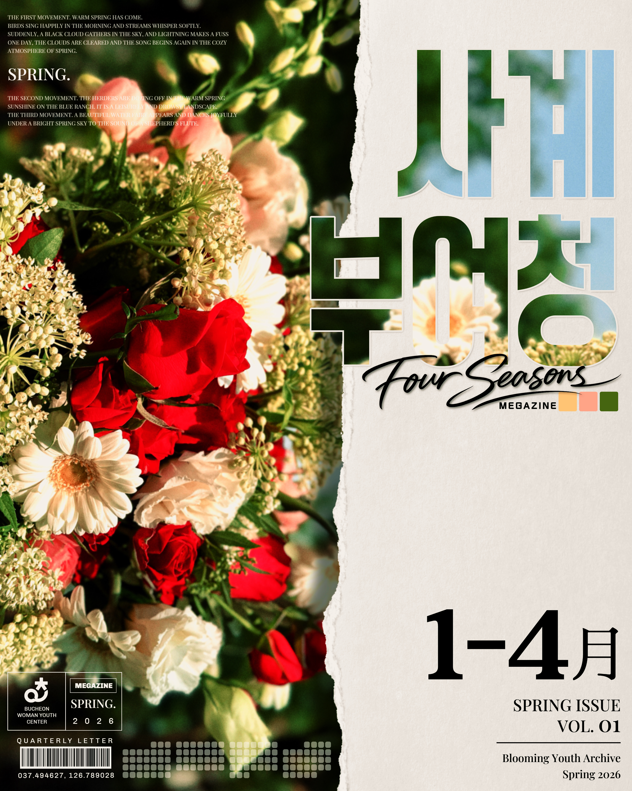
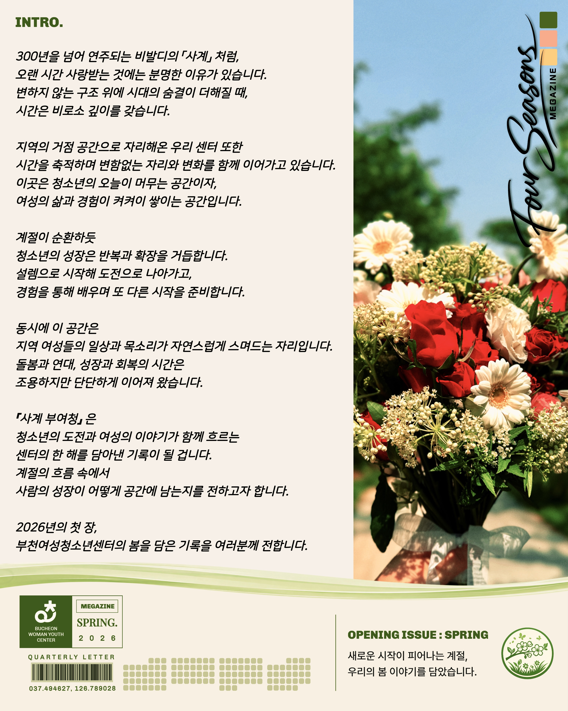
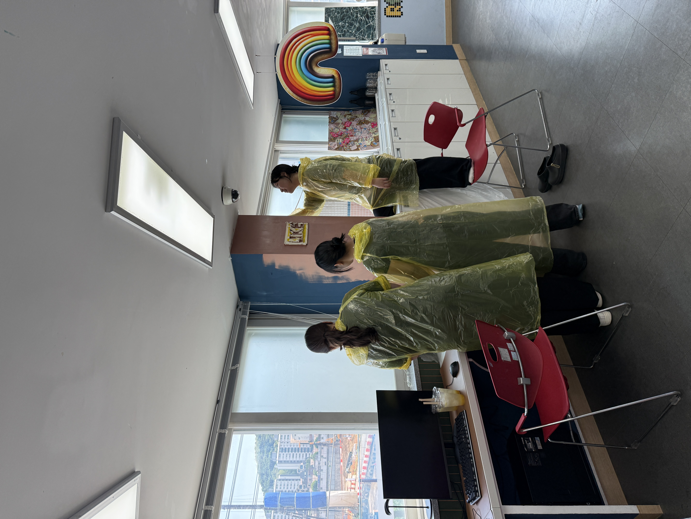
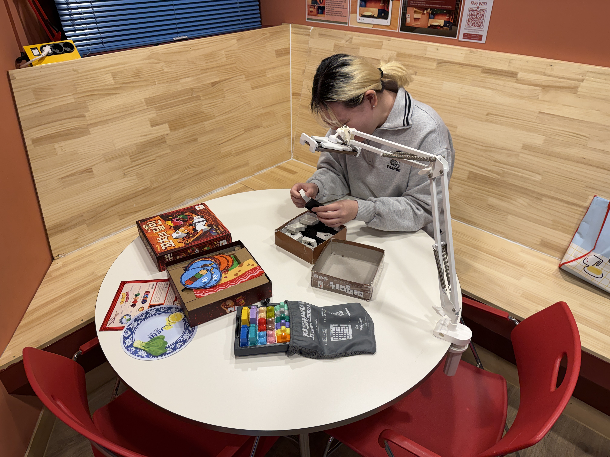
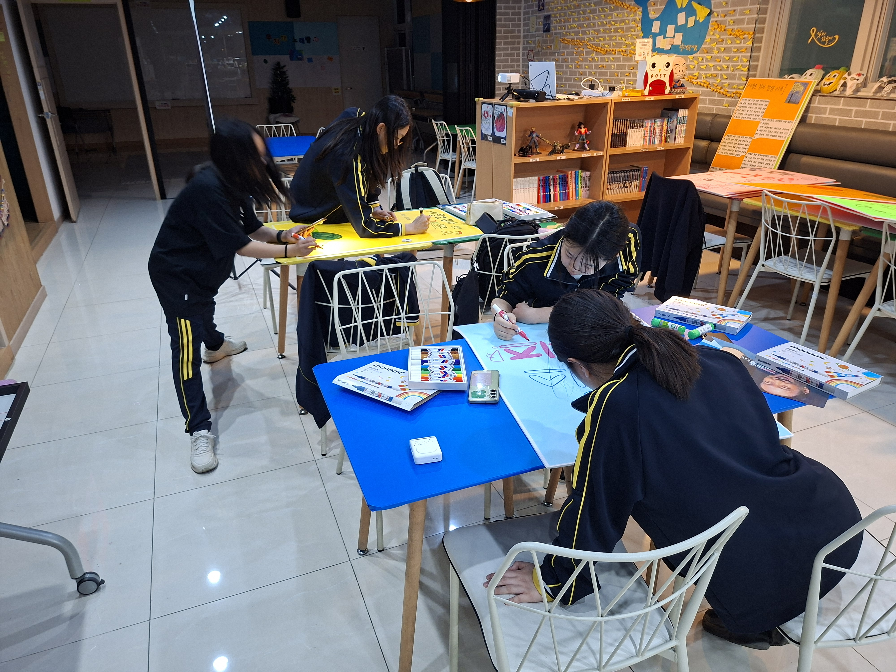
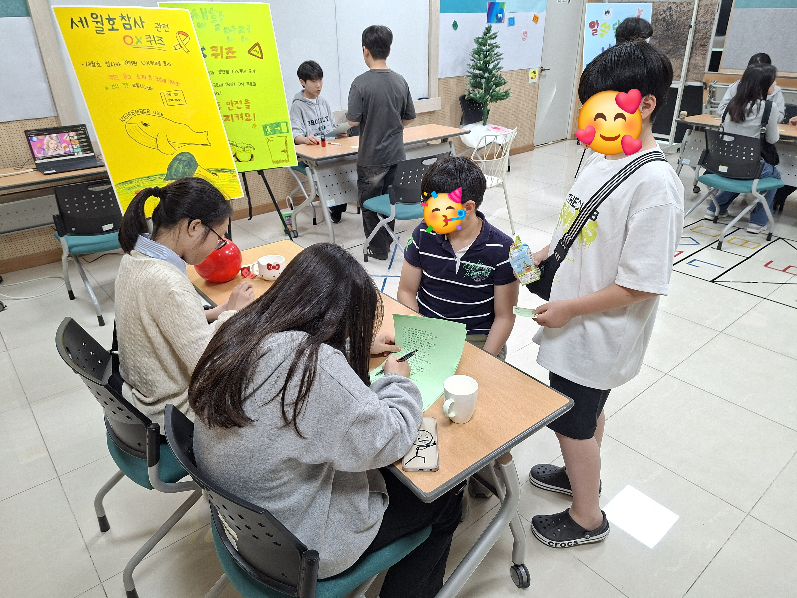
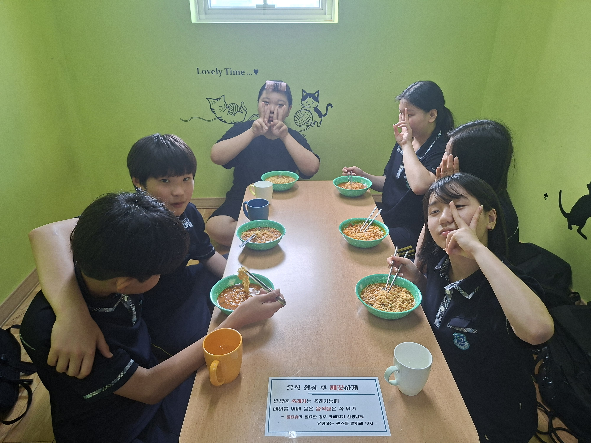

BUCHEON WOMEN & YOUTH CENTER
우리의 계절을
기록합니다.
청소년의 도전과 여성의 이야기,
그리고 공간에 쌓여가는
부천여성청소년센터의
시간을 계절마다 기록합니다.
BUCHEON WOMEN & YOUTH CENTER
청소년의 도전과 여성의 이야기,
그리고 공간에 쌓여가는
부천여성청소년센터의
시간을 계절마다 기록합니다.

SPRING 2026
새로운 사람을 만나고, 새로운 활동에 도전하며, 익숙한 공간에 또 다른 이야기를 채워 넣은 부여청의 봄을 소개합니다.
INTRO.
300년을 넘어 연주되는 비발디의 「사계」처럼, 오랜 시간 사랑받는 것에는 분명한 이유가 있습니다. 변하지 않는 구조 위에 시대의 숨결이 더해질 때, 시간은 비로소 깊이를 갖습니다.
지역의 거점 공간으로 자리해온 우리 센터 또한 시간을 축적하며 변함없는 자리와 변화를 함께 이어가고 있습니다. 이곳은 청소년의 오늘이 머무는 공간이자, 여성의 삶과 경험이 켜켜이 쌓이는 공간입니다.
계절이 순환하듯 청소년의 성장은 반복과 확장을 거듭합니다. 설렘으로 시작해 도전으로 나아가고, 경험을 통해 배우며 또 다른 시작을 준비합니다.
동시에 이 공간은 지역 여성들의 일상과 목소리가 자연스럽게 스며드는 자리입니다. 돌봄과 연대, 성장과 회복의 시간은 조용하지만 단단하게 이어져 왔습니다.
「사계 부여청」은 청소년의 도전과 여성의 이야기가 함께 흐르는 센터의 한 해를 담아낸 기록이 될 것입니다. 계절의 흐름 속에서 사람의 성장이 어떻게 공간에 남는지를 전하고자 합니다.
2026년의 첫 장,
부천여성청소년센터의 봄을 담은 기록을
여러분께 전합니다.

OUR TEAM
PEOPLE BEHIND SPRING
각자의 자리에서 사람과 공간을 연결하며 2026년 봄의 이야기를 함께 만들었습니다.
01
여성마을참여연구소
생애주기적 여성건강권
여성마을학교 잇다
여성마을동아리
마을문화사랑방
이음스토리랩
02
원미친화마을축제
청년문화기획단(청년문화살롱)
청소년운영위원회
마을청소년동아리
다재다능 우리동네
청소년문화공간 퍼닛
03
방과후아카데미 위피스쿨
04
청소년카페 무지개 도당점
청소년카페 무지개 소사점
사계부여청 기획·제작
SUMMER 2026
뜨거운 햇살만큼 활기차게 이어지는 부천여성청소년센터의 여름 이야기를 기록합니다.
SUMMER STORY
여성활동팀, 청소년활동팀, 방과후아카데미, 청소년카페의 새로운 여름 이야기가 이곳에 이어질 예정입니다.
AUTUMN 2026
한층 깊어진 활동과 사람들의 이야기를 담아 부여청의 가을을 기록합니다.
AUTUMN STORY
여성활동팀, 청소년활동팀, 방과후아카데미, 청소년카페의 새로운 가을 이야기가 이곳에 이어질 예정입니다.
WINTER 2026
함께 만든 변화와 한 해 동안 쌓인 순간들을 부여청의 겨울 기록으로 남깁니다.
WINTER STORY
여성활동팀, 청소년활동팀, 방과후아카데미, 청소년카페의 새로운 겨울 이야기가 이곳에 이어질 예정입니다.
SPRING · WOMAN'S STORY
WOMAN'S TEAM
 01
01
이음스토리랩
배움과 나눔의 가치를 담아 시민과 함께한 재봉 프로그램
STORY VIEW → 02
02
생애주기별 여성건강권
마을과 지역 기관을 연결하며 성인지 건강권의 기반을 넓혔습니다.
STORY VIEW → 03
03
여성마을학교 잇다
주민의 삶과 배움을 잇는 다채로운 강좌를 운영했습니다.
STORY VIEW → 04
04
생애주기별 여성건강권
지역 안에서 지속 가능한 성인지 건강권 실천을 고민했습니다.
STORY VIEW → 05
05
이음스토리랩
시민 강사와 함께하는 생활밀착형 수선 프로그램
STORY VIEW → 07
07
이음스토리랩
시민이 직접 기획하고 시민이 강사가 되는 프로그램
STORY VIEW → 08
08
여성마을동아리
배움을 나눔으로 이어가며 마을과 함께한 여성동아리 이야기
STORY VIEW → 13
13
여성마을참여연구소
여성마을참여연구소의 역할과 확장을 함께 고민했습니다.
STORY VIEW → 15
15
마을문화사랑방
일상 속에서 여성의 날의 의미를 자연스럽게 나누었습니다.
STORY VIEW → 16
16
여성마을리더연합활동
여성리더의 역량과 지역 활동의 연결을 넓혔습니다.
STORY VIEW → 22
22
여성마을참여연구소
마을 곳곳에서 환경을 돌보며 지속 가능한 공동체를 만들어갑니다.
STORY VIEW → 30
30
생애주기별 여성건강권
건강권 거버넌스 기관과 주민이 함께한 공동 건강권 행사
STORY VIEW → 31
31
여성마을참여연구소
지역행사와 연결해 성인지 건강권 메시지를 전했습니다.
STORY VIEW →SPRING · YOUTH STORY
YOUTH TEAM
 09
09
청소년운영위원회
함께 배우고 성장하는 청소년 자치역량의 시작
STORY VIEW → 10
10
청소년운영위원회
청소년의 제안을 실제 공간의 변화로 연결했습니다.
STORY VIEW → 14
14
원미친화마을축제
청소년과 시민이 함께한 3.8 세계여성의 날 축제
STORY VIEW → 17
17
다재다능 우리동네
직접 만들고 경험하며 새로운 즐거움을 발견했습니다.
STORY VIEW → 18
18
2026 부천여성청소년센터
다양한 청소년 자치조직이 서로를 알아가는 첫 만남
STORY VIEW → 19
19
청년문화살롱
청년이 직접 문화 프로그램을 기획하고 운영했습니다.
STORY VIEW → 20
20
다재다능 우리동네
지역아동센터 청소년과 신나는 난타 활동을 진행했습니다.
STORY VIEW → 21
21
청소년운영위원회
청소년이 직접 센터의 이름과 이미지를 만듭니다.
STORY VIEW → 23
23
다재다능 우리동네
건강한 식생활과 환경을 함께 생각하는 프로그램
STORY VIEW → 24
24
청년문화살롱
요리를 매개로 청년들의 관계를 연결했습니다.
STORY VIEW → 25
25
원미친화마을축제
세월호를 기억하고 일상 속 안전을 함께 생각했습니다.
STORY VIEW → 26
26
청소년문화공간 퍼닛
청소년이 직접 기획한 기억과 안전의 시간
STORY VIEW → 33
33
청소년문화공간 퍼닛
응급상황에 대처하며 나와 친구를 지키는 방법을 배웠습니다.
STORY VIEW →SPRING · WIFI SCHOOL
WIFI SCHOOL
 06
06
청소년방과후아카데미 위피스쿨
서로의 특별한 순간을 함께 축하했습니다.
STORY VIEW → 11
11
청소년방과후아카데미 위피스쿨
참여와 자치, 실천을 통한 성장 경험
STORY VIEW → 27
27
청소년방과후아카데미 위피스쿨
통일과 안보, 군인의 역할을 직접 경험했습니다.
STORY VIEW → 32
32
청소년방과후아카데미 위피스쿨
건강과 안전을 직접 배우고 실천했습니다.
STORY VIEW → 34
34
청소년방과후아카데미 위피스쿨
청소년의 일상과 성장을 온라인 기록으로 남깁니다.
STORY VIEW →SPRING · RAINBOW CAFE
RAINBOW CAFE

청소년 운영단의 아이디어와 일상의 따뜻한 한 끼가 이어지는 공간입니다.
VIEW →
청소년의 의견과 아이디어가 실제 공간의 변화로 이어지는 소사카페 이야기입니다.
VIEW →YOUTH CAFE · SOSA
청소년이 쉬고, 놀고, 만나고, 직접 공간과 문화를 만들어가는 곳.
SPRING STORIES
 12
12
청소년 운영단 백난향
이용자의 의견에서 시작해 직접 기획하고 변화시킨 우리 공간 이야기
STORY VIEW →YOUTH CAFE · DODANG
따뜻한 한 끼와 청소년의 기획이 만나는 공간.
SPRING STORIES
 28
28
청소년 운영단
1차 기획활동
기억과 생명존중, 안전의 의미를 함께 나눴습니다.
STORY VIEW → 29
29
청소년 운영단 2차 기획활동
따뜻한 라면 한 끼로 청소년의 일상과 관계를 연결합니다.
STORY VIEW →이음스토리랩
LEARN + SHARE + TOGETHER
ABOUT
무료 재봉교육을 통해 유지경제의 가치를 실현하고 여성들의 취미와 공동체 활동을 지원하는 프로그램입니다. 가르치는 사람도 배우는 사람도 모두 시민들로 구성해 배움과 나눔의 가치를 함께 만들어갔습니다.
UPCYCLE
자원순환의 가치를 배우고 재봉 기술도 익힐 수 있도록 폐현수막을 활용한 장바구니 제작 활동을 진행했습니다.
REUSE
헌옷을 직접 가져와 카드지갑, 원핸들백 등 새로운 생활 소품으로 다시 만들었습니다.
2026. 1. ~ 6.
부천시민 150여 명
마을공유작업실
생애주기별 여성건강권
ABOUT
부천여성청소년센터와 마을을 기반한 병원들이 지역 안에서 상호 우호관계를 형성하고 지역주민들의 성인지 건강권 증진을 도모하기 위한 업무협약을 진행했습니다.
2026. 2. ~ 3.
업무협약 관계자 10명
지역 의료기관
여성마을학교 잇다
ABOUT
자격증·심화과정, 문화예술, 건강·댄스, 야간 저녁강좌 등 다채로운 강좌를 통해 주민들의 일상과 배움을 연결했습니다.
2026. 2. ~ 5.
수강생 236명
센터 각 층 강의실
생애주기별 여성건강권
ABOUT
지역 거버넌스 기관 실무자의 성인지 건강권 내재화와 지속 가능한 실천을 위한 워크숍을 진행했습니다.
2026. 2. 4.
22명
센터 1층 회의실
이음스토리랩
ABOUT
지역 내 여성리더인 시민 강사를 발굴하고, 시민 강사가 제안한 생활밀착형 수선 프로그램을 저녁 시간에 운영했습니다.
2026. 2. 5. ~ 2. 26.
부천시민 38명
마을공유작업실
청소년방과후아카데미 위피스쿨
ABOUT
생일뿐 아니라 축하받고 싶은 일이 있는 친구들의 사연을 모아 서로를 응원하고 축하하는 시간을 만들었습니다.
2026. 3.
위피스쿨 청소년 20명
센터 3층
이음스토리랩
ABOUT
시민이 직접 프로그램을 기획하고 강사로 활동하며 지역 안의 배움과 나눔을 함께 만들어갔습니다.
2026. 3. ~ 4.
부천시민 40명
마을공유작업실
여성마을동아리
ABOUT
지역 주민과 소통하며 배운 재능을 공연과 플리마켓, 커피 나눔 등으로 지역사회와 나누었습니다.
2026. 3. ~ 5.
여성마을동아리 4개 팀
센터 및 지역사회
청소년운영위원회
ABOUT
청소년운영위원들이 함께 만나 자치와 민주주의, 정책 참여를 경험하며 청소년 자치역량을 높였습니다.
2026. 3. ~ 5.
청소년운영위원 14명 외
센터 외
청소년운영위원회
ABOUT
청소년운영위원회가 제안한 센터 공간 개선 의견을 실제 로비와 야외 공간의 변화로 연결했습니다.
INTERVIEW
직접 공간을 꾸미고 나서 처음으로 이제 좀 우리 공간 같다는 느낌이 들었습니다.
2026. 3. ~ 5.
청소년운영위원회
센터 로비 및 앞마당
청소년방과후아카데미 위피스쿨
ABOUT
다양한 참여형 프로젝트를 통해 청소년의 주도성과 자치 역량을 키우고 스스로 변화를 만들어가는 과정을 지원했습니다.
2026. 3. ~ 5.
위피스쿨 청소년 20명
센터 3층
청소년카페 무지개 소사점
+ SPACE + IDEA + YOUTH = CHANGE
ABOUT
청소년카페 무지개 소사점 소속 청소년 운영단 '백난향'이 공간을 이용하는 청소년들의 더 큰 즐거움을 만들기 위해 아이디어를 모으고, 함께 실천했습니다.
청소년의 시선으로 필요한 공간을 발견하고 제안해요.
아이디어 회의부터 계획 수립까지 모두 함께해요.
직접 만들고 꾸미며 공간에 변화를 더해요.
협력과 소통을 통해 우리가 함께 성장해요.

PLANNING
3개년 연속으로 이어온 공간개선 활동을 바탕으로 올해는 많은 이용자들의 의견을 반영해 가장 개선 요청이 많았던 PC부스 개선을 목표로 선정했습니다.

SPACE CHANGE
허전하고 노후화됐던 벽은 감각적인 타일과 직접 칠한 페인트 작업을 통해 더욱 트랜디하고 밝은 분위기의 공간으로 새롭게 변화했어요! 또한 PC 업데이트와 모니터, 부품 교체를 함께 진행하여, 무지개 카페 소사점을 이용하는 청소년들이 더욱 쾌적하고 만족스럽게 PC부스를 이용할 수 있었어요! 단순한 환경 개선을 넘어, 청소년들이 더 오래 머물고 싶은 공간이 될 수 있도록 이용자 중심의 공간 분위기 조성에도 집중했으며, 새롭게 달라진 공간 덕분에 더 많은 친구들이 무지개 카페 소사점을 찾아주었어요!

PROMOTION
새롭게 변화한 PC부스와 공간 곳곳을 효과적으로 알리기 위해 청소년들이 트랜디함과 감각을 담아 직접 릴스와 숏폼 콘텐츠를 제작했습니다.
INTERVIEW
“우리 손으로 꾸민 공간이라 더 의미 있었어요!”
일상에서는 쉽게 경험하지 못했던 활동이라 더 즐겁게 참여할 수 있었습니다. 겹겹이 칠하면서 공간이 점점 깔끔해지는 모습을 보며 뿌듯한 마음도 생겼습니다. 다음에 이런 활동이 있다면 또 참여하고 싶었던 의미 깊은 활동입니다.

청소년카페 무지개 소사점
카페 소사점은 단순히 머무는 장소가 아니라 청소년들의 추억과 취향, 관계가 쌓이는 공간이라고 생각합니다. 그래서 ‘직접 더 좋은 공간을 만들어보자’는 마음으로 활동을 이어오게 되었고, 올해로 4개년째 꾸준히 공간 개선 활동을 진행하며 카페 소사점의 하나의 문화로 자리잡고 있다고 느끼고 있습니다.
청소년들이 주도적으로 공간을 개선하면서 단순한 꾸미기를 넘어 '우리 공간'을 만들어가는 과정 자체가 큰 의미라고 생각해요!
BEFORE & AFTER


NEXT
우리가 바꾼 공간이 더 많은 청소년들에게 즐거움과 영감을 주는 장소가 될 수 있도록 지속적으로 관리하고, 더 새롭고 다채로운 변화를 만들어갈 계획입니다.
2026. 3. ~ 5.
청소년 운영단 백난향 7명
청소년카페 무지개 소사점
여성마을참여연구소
ABOUT
여성마을참여연구소의 역할과 확장을 위해 운영 체계와 조직의 내실화를 위한 전문가 자문을 진행했습니다.
원미친화마을축제
ABOUT
3·8 세계여성의 날을 맞아 여성과 청소년의 인권과 건강권을 지역사회에 확산하기 위한 축제의 장을 마련했습니다.
마을문화사랑방
ABOUT
지역주민에게 여성의 날이 지닌 소중한 가치를 전하고 여성의 권리에 대한 관심을 자연스럽게 나누었습니다.
여성마을리더연합활동
ABOUT
여성마을활동가 역량강화와 지역사회 참여 촉진을 위해 여성활동가들이 만나 배우고 교류하는 시간을 만들었습니다.
다재다능 우리동네
ABOUT
여월중학교 특수학급 청소년들과 다양한 베이킹 체험활동을 진행했습니다.
2026 부천여성청소년센터
ABOUT
다양한 청소년 조직이 한자리에 모여 올해의 활동 방향과 앞으로 만들어갈 이야기를 나누었습니다.
청년문화살롱
ABOUT
청년문화기획단이 자신들의 관심사와 경험을 담은 프로그램을 직접 기획하고 운영했습니다.
다재다능 우리동네
ABOUT
지역아동센터 청소년들과 스틱 잡는 법부터 다양한 장단과 퍼포먼스까지 함께 배웠습니다.
청소년운영위원회
ABOUT
청소년운영위원회가 기획부터 심사까지 직접 이끌며 센터 대표 캐릭터의 이름을 찾아갑니다.
여성마을참여연구소
ABOUT
지역 곳곳에서 환경정화활동을 진행하며 살기 좋은 마을공동체를 만들어갔습니다.
다재다능 우리동네
ABOUT
환경을 생각하는 건강한 식생활을 주제로 지역 청소년들과 푸드테라피 활동을 진행했습니다.
청년문화살롱
ABOUT
청년문화기획단 단원들이 요리를 매개로 소통하고 정서적 유대감을 쌓았습니다.
원미친화마을축제
ABOUT
세월호 참사 12주기를 맞아 청소년과 시민이 함께 추모하고 일상 속 안전문화를 이야기했습니다.
청소년문화공간 퍼닛
ABOUT
퍼닛 운영단이 직접 기획하여 추모 영상, 키링 제작, 추모메시지 나눔 등을 진행했습니다.
청소년방과후아카데미 위피스쿨
ABOUT
통일전망대와 군부대 체험을 통해 분단과 평화, 군인의 역할과 국가안보의 의미를 배웠습니다.
청소년카페 무지개 도당점
「12년의 세월」
ABOUT
세월호 참사 12주기 추모 행사를 통해 생명 존중과 인간 존엄의 가치를 되새기고, 안전의 중요성에 대한 인식을 높일 수 있는 계기를 마련했습니다. 청소년 운영단이 직접 활동을 기획하고 준비하며 기억과 안전의 의미를 청소년의 시선으로 함께 나누었습니다.
KEY VALUES
세월호 참사 추모를 통해 생명의 소중함과 존엄성을 되새기는 기회가 되었습니다.
안전에 관한 인식개선 활동을 통해 일상 속 안전의 중요성을 함께 알렸습니다.
퀴즈를 통해 사회적 재난의 의미와 교훈을 이해하고 재난 예방의 중요성을 배웠습니다.
공동체 구성원으로서 타인을 배려하고 생명과 안전을 존중하는 책임감을 생각했습니다.

PREPARATION
「12년의 세월」 운영을 위한 사전 작업을 진행했습니다. 행사 부스별 이름을 직접 만들고, 각 부스의 성격에 어울리는 간판과 안내물을 준비하며 활동을 구체화했습니다.

REMEMBER
세월호 참사 퀴즈 부스, 생활 안전 퀴즈 부스, 넌센스 퀴즈 부스까지 총 3개의 퀴즈 부스를 운영했습니다. 세월호 참사 스토리텔링 전시와 관련 영상 상영도 함께 진행하며 청소년들이 자연스럽게 기억과 안전의 의미를 접할 수 있도록 했습니다. 이번 활동을 통해 청소년이 사회적 이슈를 스스로 인식하고 직접 프로그램으로 구현하며, 다양한 방식으로 사회적 활동에 참여할 수 있다는 것을 경험했습니다.
2026. 4. 18.
13:00~16:00
청소년 47명,
청소년 운영단 도담도담 7명
청소년카페 무지개 도당점
(도당어울마당 4층)
청소년카페 무지개 도당점
MEAL + REST + TALK + TOGETHER
ABOUT
함께 나누는 한 끼 식사의 행복! 먹어야 잘 놀고, 먹어야 공부도 하지요. 청소년카페 무지개 도당점에서는 청소년들과 함께 나눌 따뜻한 라면 한 끼를 준비하고 기다리고 있습니다. 편안하게 쉬어가고, 자연스럽게 이야기를 나누며 일상 속 따뜻한 관계가 이어지는 시간을 만듭니다.
KEY VALUES
함께 식사를 나누며 따뜻한 한 끼의 가치를 경험합니다.
잘 먹고 건강하게 놀고 배우며 청소년의 일상과 성장을 함께 응원합니다.
식사를 매개로 자연스럽게 대화하고 서로의 관계를 만들어갑니다.
누구나 편하게 방문하고 따뜻한 마음을 나눌 수 있는 공간을 만들어갑니다.

MEAL TOGETHER
왠지 모르게 배가 슬슬 출출해지는 오후 4시 30분. 그럴 땐 무지개 카페에 들러 따뜻한 라면 한 그릇과 함께 잠시 쉬어가는 시간을 가져보세요. 청소년들을 위해 다양한 종류의 라면을 준비하고 기다리고 있습니다.

REST & TALK
혼자 와도 좋고, 친구와 함께 와도 더 맛있는 시간입니다. 따뜻한 한 끼와 함께 편하게 쉬어가며 이야기를 나누고, 자연스럽게 서로의 일상을 공유할 수 있는 저녁 시간을 만들어갑니다.
EVERY THURSDAY
격주 목요일 오후 4시 30분부터 오후 7시까지, 청소년카페 무지개 도당점에서 만나요.
2026. 4. 23.(목)
~ 11. 26.(목) 예정
청소년 100명
청소년카페 무지개 도당점
(도당어울마당 4층)
생애주기별 여성건강권
ABOUT
지역 건강권 거버넌스 기관들과 함께 공동 건강권 행사와 평등걷기, 체험 활동을 진행했습니다.
여성마을참여연구소
ABOUT
지역 행사와 연계하여 예방 캠페인과 건강권 체험, 인식개선 활동을 진행했습니다.
청소년방과후아카데미 위피스쿨
ABOUT
평등걷기와 건강 부스체험, 심폐소생술과 응급처치 교육을 통해 건강과 안전의 가치를 배웠습니다.
청소년문화공간 퍼닛
ABOUT
다양한 응급상황을 알아보고 심폐소생술과 응급처치를 직접 체험하며 나와 친구를 지키는 방법을 배웠습니다.
청소년방과후아카데미 위피스쿨
ABOUT
위피스쿨에서 진행되는 프로그램 활동과 청소년의 일상을 기록하고 공유하는 온라인 공간을 만들었습니다.